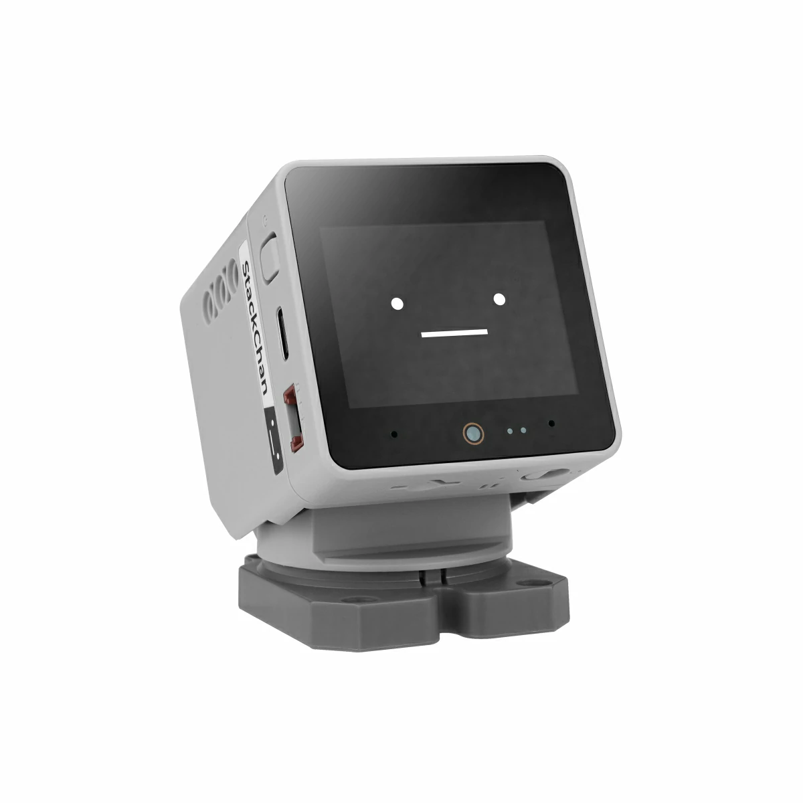
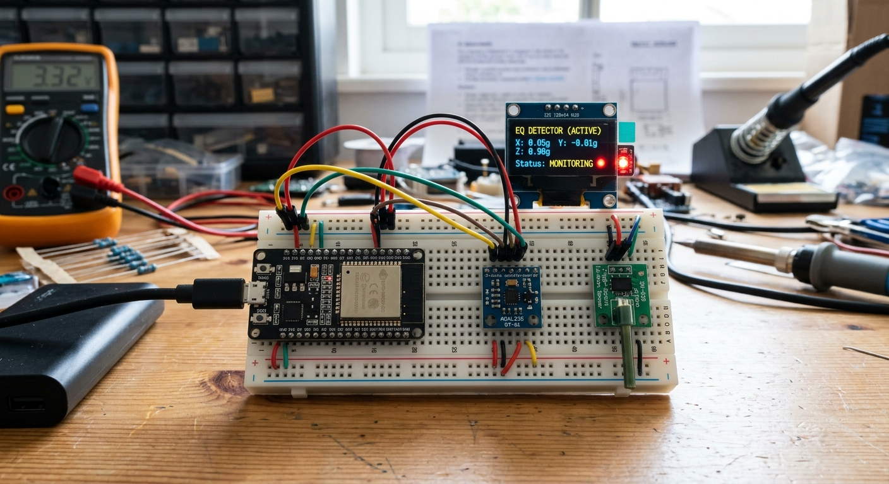

My Projects
Command Shell
A web-based remote access tool functioning as a command terminal and file manager. It allows users to execute shell commands, navigate directories, and manage files directly from a browser. Features include a login system with user/admin routing, standard command execution, and administrative capabilities for uploading, downloading, previewing, and deleting server files.
Technologies: PHP, HTML, CSS, Shell/CMD
Try It
Esp32 Camera Tracking
A responsive camera robot that identify and follow objects
Planned Project

Esp32 Earthquake Notification
A tool that can notify possible earthquake occurence
Planned Project